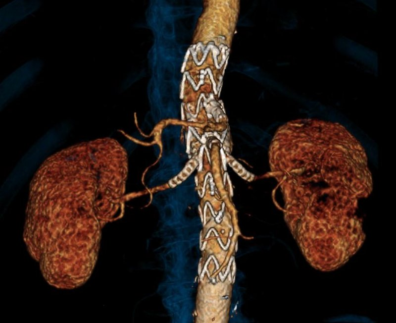

Endoprotesi branched e fenestrate per gli aneurismi aortici complessi

Molti aneurismi che si estendono al di sopra delle arterie renali oggi si possono trattare per via endovascolare, senza aprire l'addome o il torace.
Le endoprotesi branched e fenestrate hanno finestre o ramificazioni che mantengono il flusso nelle arterie viscerali e renali, con meno complicanze rispetto alla chirurgia tradizionale. Il nostro gruppo ha contribuito in particolare a:
- identificare i fattori anatomici associati alle complicanze, per personalizzare la scelta del paziente e della protesi;
- introdurre l'ecografia intravascolare (IVUS) per guidare l'impianto con meno radiazioni e mezzo di contrasto;
- valutare le endoprotesi off-the-shelf, pronte all'uso nei casi urgenti;
- standardizzare le protesi physician-modified, adattate dal chirurgo per il trattamento urgente.
Pubblicazioni di riferimento
- Use of an off the shelf inner branch thoraco-abdominal endograft for the treatment of juxtarenal and pararenal aortic aneurysms Eur J Vasc Endovasc Surg, 2025
- Early outcomes from the multicentre Standardised PHysician modified four fenestration Endograft REgistry (S.PH.E.RE.) Eur J Vasc Endovasc Surg, 2025
- Geometrical determinants of target vessel instability in fenestrated endovascular aortic repair J Vasc Surg, 2022
- Effect of aortic angulation on the outcomes of fenestrated-branched endovascular aortic repair J Vasc Surg, 2021
 Bridging stents in complex endovascular aortic repair
Bridging stents in complex endovascular aortic repair